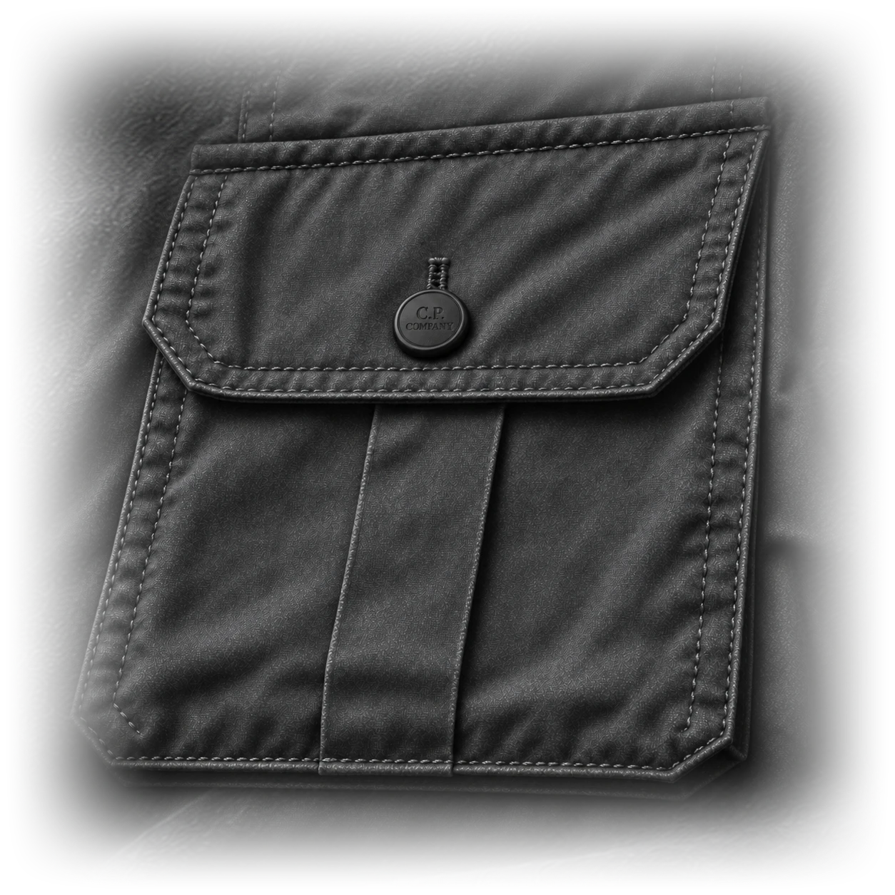
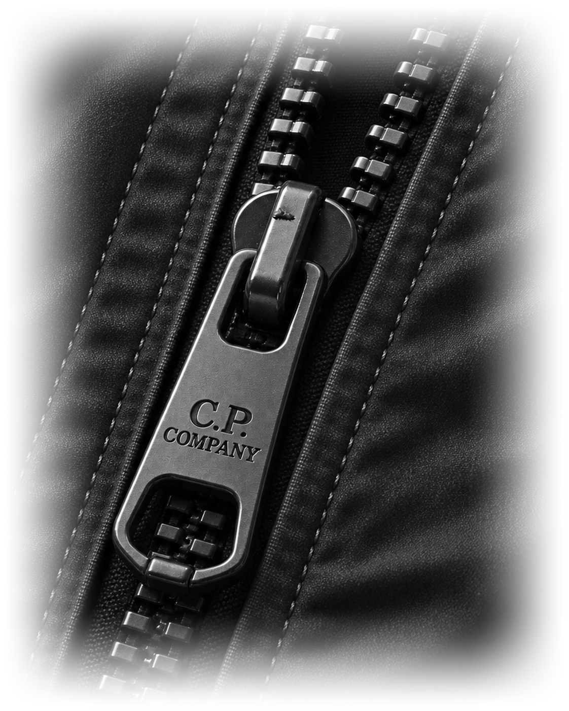
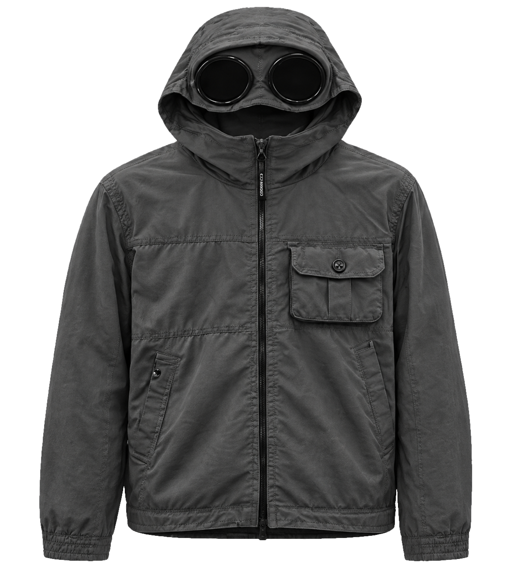
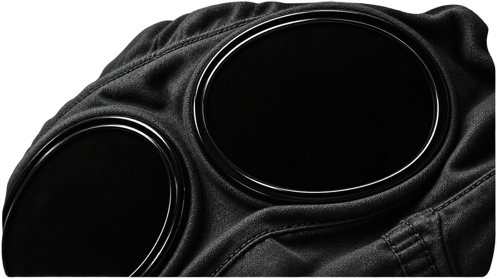
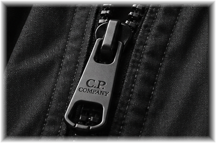
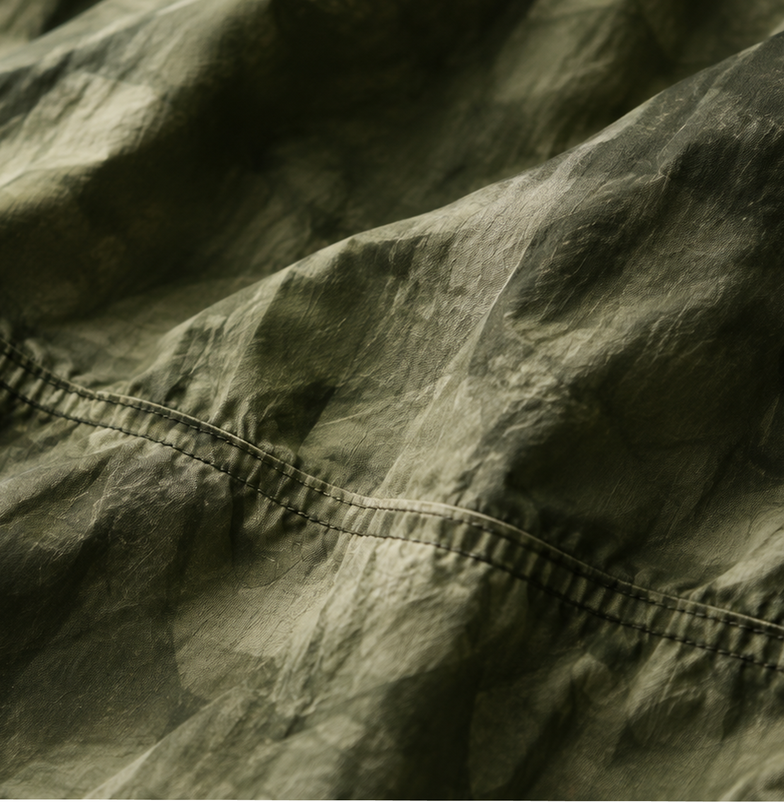
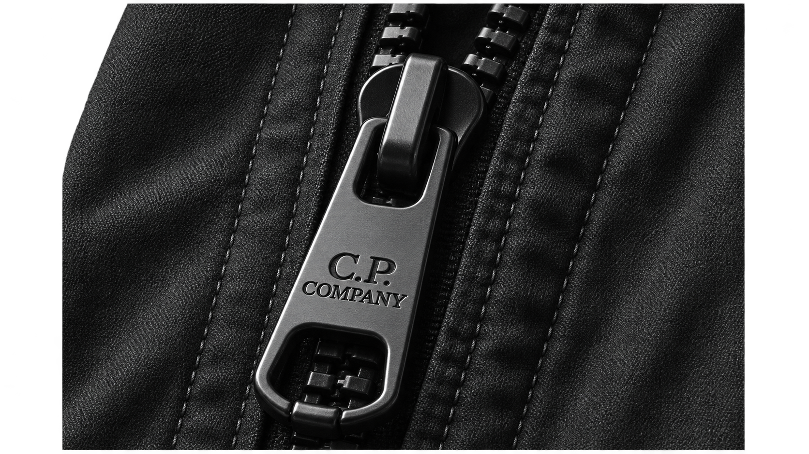
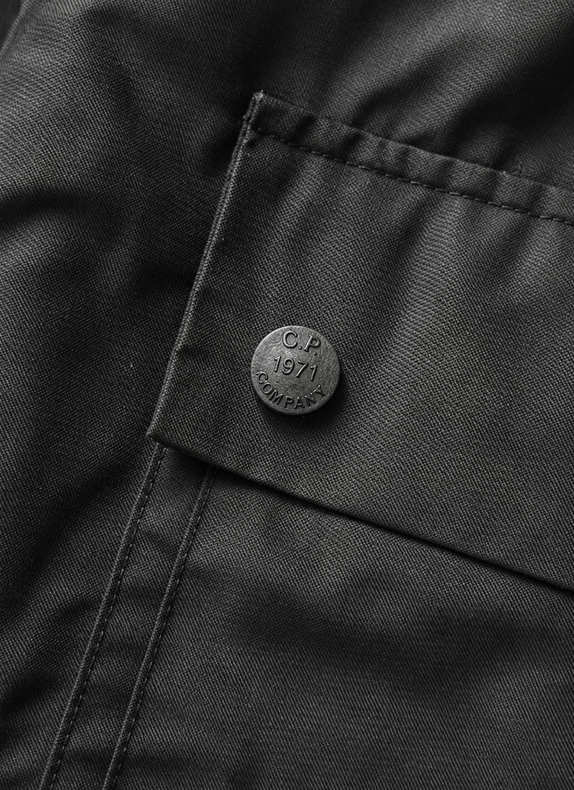

DNA
Function before form.
C.P. Company는 밀리터리와 워크웨어에서 출발해
기능과 구조에 대한 새로운 해석을 시도합니다.
반복되는 실험과 소재 연구를 통해
하나의 디테일은 새로운 디자인으로 발전합니다.
Innovation is in the details.
01 시그니처 디자인의 기원




02 디자인 구조의 분석
Behind
The
Seams
각 요소를 분리해 숨겨진
디자인의 의도와 구조를 살펴보세요.


GOGGLE
마시모 오스티는 일본 민방위용 보호 후드에서 영감을 받아 고글을 디자인했습니다. 1988년 후드에 적용된 고글은 C.P. Company를 상징하는 디자인으로 발전했습니다.

군복과 작업복의 수납 구조에서 영감을 받아 실용성을 강조했습니다. 포켓의 위치와 덮개, 입체적인 형태는 수납의 효율성과 기능적 디자인을 함께 고려한 결과입니다.

ZIPPER
단순한 여밈을 넘어 착용자의 움직임과 편의성을 고려한 요소입니다. 양방향 지퍼와 보호용 덮개 등은 활동성과 실용성을 높이기 위한 기능적 설계를 보여줍니다.
FUNCTION
FORM
IDENTITY
기능을 탐구하고,
실험으로 정체성을 완성하다.
03 디테일 아카이브

01 고글 디테일

02 염색 원단

03 지퍼 디테일

04 포켓 디테일